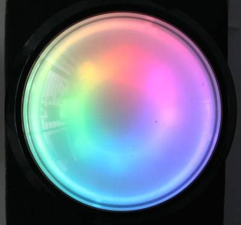
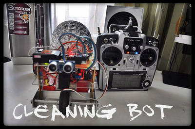
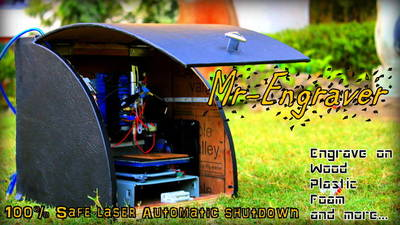
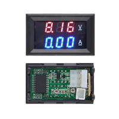

2015-12-15 - Nº 33

Editorial
Aqui está a Newsletter Nº 33 no seu formato habitual. Foram adicionados botões de partilha nas várias redes sociais, se gostar da Newsletter partilhe-a!
Todas as Newsletters encontram-se indexadas no link.
Esta Newsletter tem os seguintes tópicos:
Esta semana a Baidu anunciou que está na corrida dos carros sem condutor em parceria com a BMW. Um investigador chinês apresenta um carro controlado pelo cérebro. A policia de Tóquio já tem um drone caça-drones. Na Newsletter desta semana falamos de vários projetos de maker que poderão ser interessantes de explorar. Iremos construir um circuito de teste de servos.
 João Alves ([email protected])
João Alves ([email protected])
O conteúdo da Newsletter encontra-se sob a licença  Creative Commons Attribution-NonCommercial-ShareAlike 4.0 International License.
Creative Commons Attribution-NonCommercial-ShareAlike 4.0 International License.
Novidades da Semana ^
Baidu's Robot Car Marks Self-Driving Milestone in Beijing
"China’s answer to Google’s self-driving car has set its own record on the roads of Beijing. The Baidu robot car became the first Chinese vehicle to complete a fully autonomous drive under a variety of road conditions that included navigating local road traffic and highway driving."
Chinese researchers unveil brain powered car
"China's first mind-controlled car has been developed by researchers in the north-east port city of Tianjin. Chinese researchers have developed what they say is the country's first car that uses nothing but brain power to drive. The research team from Nankai University, in the north-eastern Chinese port city of Tianjin, has spent two years bringing the mind-controlled vehicle to reality. By wearing brain signal-reading equipment a driver can control the car to go forward, backwards, come to a stop, and both lock and unlock the vehicle, all without moving their hands or feet. Researcher Zhang Zhao told Reuters the equipment comprises 16 sensors that capture EEG (electroencephalogram) signals from the driver's brain. They developed a computer program that selects the relevant signals and translates them, enabling control of the car."
Tokyo police arm themselves in drone war against terrorism
"In a first for Japan, Tokyo police will deploy a net-carrying drone to capture unmanned aerial vehicles unlawfully flying over important sites in the capital. The Metropolitan Police Department’s unit in charge of patrolling the Diet building, the prime minister’s office, the Imperial Palace and other significant locations in Tokyo will be equipped with the drone in mid-December."
Ciência e Tecnologia ^
Graphene flakes as an ultra-fast stopwatch
"Scientists at the Helmholtz-Zentrum Dresden-Rossendorf (HZDR), working with colleagues from the USA and Germany, have developed a new optical detector from graphene which reacts very rapidly to incident light of all different wavelengths and even works at room temperature. It is the first time that a single detector has been able to monitor the spectral range from visible light to infrared radiation and right through to terahertz radiation. The HZDR scientists are already using the new graphene detector for the exact synchronization of laser systems. A tiny flake of graphene on silicon carbide and a futuristic-looking antenna, and there it is -- the new graphene detector. Like no other single detector system which has gone before, this comparatively simple and inexpensive construct can cover the enormous spectral range from visible light all the way to terahertz radiation. "In contrast to other semiconductors like silicon or gallium arsenide, graphene can pick up light with a very large range of photon energies and convert it into electric signals. We only needed a broadband antenna and the right substrate to create the ideal conditions," explained Dr. Stephan Winnerl, physicist at the Institute of Ion Beam Physics and Materials Research at the HZDR."
New lithium-air battery could drive huge performance gains
"Researchers at the University of Cambridge are claiming to have created a lithium-air battery chemistry that solves many of the outstanding problems with that design and could revolutionize the battery industry in a way not seen since the introduction of lithium-ion. That's a hefty claim for any organization. But if the claims prove true, the research teams might not be exaggerating. Lithium-ion batteries have given us electric vehicles, laptops and smartphones, and much of the modern digital ecosystem, but they aren't particularly power efficient or energy dense. As the chart below shows, lithium-ion's energy density (measured either in terms of weight or volume) is terrible compared with just about everything."
Scientists develop 'unbreakable' glass almost as tough as steel
"Japanese researchers have developed a new type of glass almost as hard as steel, a breakthrough that could lead to the development of substantially tougher windows and tableware. “We will establish a way to mass-produce the new material shortly,” said Atsunobu Masuno, an assistant professor at the University of Tokyo's Institute of Industrial Science. “We are looking to commercialize the technique within five years.” Oxide glass mainly consists of silicon dioxide, with its strength boosted by mixing in alumina, an oxide of aluminum. But it had been difficult for scientists to form glass containing a large amount of alumina because the oxide causes crystallization when the glass comes into contact with its container."
Modelos 3D ^
Com a disponibilidade de ferramentas que permitem dar azo a nossa imaginação na criação de peças 3D e espaços como o thingiverse para as publicar, esta rubrica apresenta alguns modelos selecionados que poderão ser úteis.
Parametric LED Tea Light (http://www.thingiverse.com/thing:1188083)
Features:
- Standard CR2032 Battery (Clip in)
- 5mm LED
- Easy Solder
- Ideal light source for your projects
- Optional Switch
- Text for lead identification of LED
Hats:
Hats can be placed on top of the tea light with a push fit, here are some suggestions:
Candle TeaLiight Hat: http://www.thingiverse.com/thing:1188098
- Christmas Tree Hat: http://www.thingiverse.com/thing:193814 (Diameter: 42; Height: 14.65; LED Holder Outer Diameter: 9.8)
- Snowman Hat: http://www.thingiverse.com/thing:1188099
Parts:
Battery Holder:
- https://solarbotics.com/product/bhold2032/ or
- http://www.digikey.com/product-detail/en/BS-7/BS-7-ND/389447
LED:
Any 5mm LED that has a 3 Volt forward voltage or less will do, here are some animated suggestions:
- https://www.sparkfun.com/products/11450 (slow color cycle)
- https://www.adafruit.com/products/679 (slow color cycle)
- http://shop.evilmadscientist.com/productsmenu/partsmenu/353 (candle flicker)
Switch (Optional):
The battery holder can be used as a switch by using the built in clip, but if a switch is desired:
- http://www.digikey.com/product-search/en?keywords=CKN10397
Pythagorean Tree (http://www.thingiverse.com/thing:1194610)
Inspired by a design by Walter Janssens I decided to create a model of my own. The beautiful fractal "Pythagorean tree" brought to life.
I printed a limited iterations model, but bigger iterations are possible. I have provided a openscad file which allows you to tweak the number of iterations, starting cube size etc..
Trivia First constructed by Albert E. Bosman in 1942. It has been proven that the total surface area of a 2D Pythagorean tree is finite, by bounding so is the volume of this 3D pythagorean tree. https://en.wikipedia.org/wiki/Pythagoras_tree_(fractal)
Have fun!
Low Poly Darkvader & Stormtrooper Head (http://www.thingiverse.com/thing:1191485)
My cousin love Star Wars! but he would like to have flat base of the head for him to edit! so I adjust FLOWALISTIK model and upload for him!
and Once again THANK YOU FLOWALISTIK for his AWESOME STAR WARS Model!
Dec....I am waiting...MAY THE FORCE BE WITH YOU
Circuitos ^
Aqui é apresentado um circuito simples que poderá ser construído com componentes.
Circuito de Teste de Servos
Neste artigo iremos construir um circuito para controlar a posição de um servo. Os servos são tipicamente pequenos em tamanho e são tipicamente usados para operar robots, carros ou aviões controlados remotamente via-radio. São igualmente usados em aplicações industriais, robótica, manufatura, etc.
Um servo é construído no interior da unidade do motor e tem um eixo posicionável, que normalmente é equipado com uma engrenagem. O motor é controlado por um sinal eléctrico (PWM), que determina a quantidade de movimento do eixo.
Os Servos são controlados através do envio de um impulso eléctrico de largura variável, ou a modulação de largura de impulso (PWM), através do fio de controlo. Há um mínimo de pulsação, um pulso máximo e uma taxa de repetição. Um servo-motor normalmente só pode girar 90° em qualquer dos sentidos para um total de 180° de movimento. A posição neutra do motor é definida como a posição em que o servo tem a mesma quantidade de rotação no potencial tanto no sentido dos ponteiros do relógio ou no contrário. O PWM enviado para o motor determina a posição do eixo, e com base na duração do impulso enviado através do fio de controlo do rotor vai rodar para a posição desejada. O servo-motor espera para ver um impulso a cada 20 mili-segundos (ms) e o comprimento do impulso determina o quanto o motor gira. Por exemplo, um impulso de 1.5ms sua vez fará com que o motor para a posição de 90°. Mais curta do que 1.5ms move-a para 0° C e por mais tempo do que 1.5ms irá transformar o servo de 180°, como esquematizada abaixo.
Quando é dada a ordem aos servos para se moverem, eles vão passar para a posição e manter essa posição. Se uma força externa for feita contra o servo enquanto o servo está mantendo uma posição, o servo irá resistir de mudar de posição. O montante máximo de força que o servo pode exercer é chamado a classificação de servo torque. Os servos não vão segurar sua posição para sempre embora; o impulso de posição devem ser repetidas para instruir o servo para ficar em posição.
Este circuito construído com recurso a um IC 555, permite que ao mudar a posição do trimmer de 100K, alterar a posição do servo.
Esquemático
Componentes (BOM):
- 1x IC NE555
- 1x Resistência de 220K Ohms (R1)
- 1x Resistência de 15K Ohms (R2)
- 2x Resistências de 10K Ohms (R3, R4)
- 1x Resistência variável de 100K Ohms (RV1)
- 1x Transístor NPN 2N2222A (Q1)
- 2x Condensadores Cerâmicos de 100nF (C1, C2)
- 1x Servo (HXT900)
Pin-out dos IC/Componentes
Links úteis:
Projetos Maker ^
Diversos Projetos interessantes.
Low Cost IR Decoder
"Its just a IR Decoder that can decode the HEXADECIMAL IR signals from the TV remote for further use. like programming any TV remote etc. Its made with Freeduino (not Arduino). Freeduino is a arduino compatible low cost micro controller. You can program using Arduino IDE (just like coding for Arduino UNO). Its based ob Atmega 328 chip."
Neopixel Dome Button

"This is an Instructable I wanted to do for a while, on how to build a really great-looking Dome Button with built-in LEDs. It's part of a 2-series where I will explain how we built our Hackerspace Status Button for P-Space, our local hackerspace in Patras, Greece. The basic premise is that we wanted a way for the first person coming into P-space to set the space status to Open, and the last one to leave to set it to Closed. We used to do this through a simple web page, but we wanted an easier way to do that, so we set up an Arduino with a Wi-Fi shield next to the door that connects to that web page and controls the status."
Open Source Watch
"OSWatch MK II - When I started this project, I had a series of goals in mind: Hardware with 100% Arduino Compatibility; Large Program Memory for lots of creative potential ; Minimum Battery life of 1 Day; BLE as both Central or Peripheral; Compact size. Over the next several pages are instructions on how to build your very own open source watch!"
Arduino Controlled Positional RGB LED Christmas Tree
"In this Instructable we'll be creating a programmable RGB LED Christmas Tree and building the (X,Y) positions of the lights into the Arduino such that we can create different patterns both animated and static. I'd recommend this to anyone who has micro controller or electrical experience as it is a really impressive effect without much time to build up, and is much more affordable and capable then color changing systems you can purchase in retail stores. Even after creating the system and putting it into motion it is fun to add new patterns and color combinations to the tree. In my case the tree will cycle color patterns every minute."
IoBot
"If you are looking for a way to control an Arduino based devices, this instruction will show you how to do it by building simple robot. The IoBot can be controlled by mobile and computer application via LAN or USB Cable. The application runs on Android, Mac OS and Windows, it is available for download on IoBot’s website. All the plastic parts are 3D printed, Arduino is the brain and the control application is written in Python / Kivy. Knowledge of programming languages is not required but I have provided links through which you can find more detailed information about them. It might be helpful for someone who would like to modify the code and customise application or Arduino sketch."
Automatic Street Light Controller Circuit Using LDR And 555 Timer IC
"We are living in the world where everything goes to be automatic from your washing machine to your ceiling fan. Street lights are one of those example of automatic world. Automatic street light are those light which needs no manual operation to gets turn ON and turn OFF . Did you ever tried to make such kind of street lights that gets turn ON and turns OFF automatically? In this article we are going to make automatic street light using LDR and 555 timer IC."
Balancing of a Ball on Beam using Arduino as a PID controller
"I used Arduino Uno as a PID controller to balance a small ping-pong ball on a 4-bar mechanism. And used Matlab to plot the position of the ball vs time."
Voice Controlled Robot Arm
"Have you ever felt fustrated doing things wishing you had one more hand? Well, this will help you. This is a robot that can do whatever that you want just speaking to it for example you can say "up" and the robot will do a little movement to the side that you said."
Vacuum Cleaning RC robot

"Hello everyone! In this instructable, I'm showing you how to DIY a Vacuum Cleaner RC Robot. Not only a Remote Controlled Vacuum Cleaner, it also includes 3D CAD, Programming, Algorithms, Mechanics, PCB CAD and Schematics. You can definitely edit or alter and make it better. All files are here, free to download. I posted some codes as an example and please feel free to play with. So here is the RC Vacuum Cleaner, good luck for making this one."
Polyphonic FM Synthesizer with STM32F031
"I’ve built a playable, MIDI capable, polyphonic FM synthesizer using an 32bit ARM Cortex M0 microcontroller and an audio codec. This was a learning experience for me. You can find the finished form of the system in following two images."
Raspberry Pi Barometer Weather Clock
"In this instructable I'll show you how to build a basic Thermometer / Barometer clock using a Raspberry Pi 2 with a BMP180 I2C sensor displaying on an Adafruit 4 digit 7 segment I2C display. The Pi also uses a DS3231 real time I2C clock module to keep time when the Pi is restarted."
How to Program in Binary Machine Code - Raspberry Pi PDP-11
"Want to do some binary machine coding using switches and lights? First, you need to build a PDP-11. This is because a PDP-11 has switches and lights, which is awesome. If you just want to learn a bit without building a PDP-11, scroll down to programming binary machine code."
Super Cheap 3D Printer from CD-Rom Drives
"This idea was inspired by all of the CD-Rom CNC machines that I've seen on Instructables. I've seen them used as drawbots, laser cutters, drill presses, but I haven't seen one yet used for a 3D printer...at least not a reasonably priced one. So the goal of this instructable is to show you how to make your own 3D printer from old CD-Rom drives an a cheap 3D printing pen."
Make Games with Python
"Make Games with Python is designed to help you learn the coding skills you need to create amazing games and applications on your Raspberry Pi. While countless millions of us like nothing more than spending hours racking up high scores on our favourite games, too few of us are exposed to an even more gratifying way to spend the evening – making them."
Mr.Engraver : the Desktop Laser Engraving Machine

"Meet "Mr.Engraver" ! The DIY portable desktop laser engraving machine. The Engraver can engrave on wood and plastic, Cut through foam sheets and paper. The machine can be used to do tons of creative work, the only limit is Imagination (besides the work area). The work area of Mr-Engraver is 38mm x 38mm. The whole machine was built , while keeping Laser safety in mind. I have built a cabinet for the machine. This protects the user from direct viewing. And know what ... its equipped with the 'Automatic laser shutdown'"
Ultrasonic Distance Sensor Visualizer W/ Processing
"this project uses processing to take data from an ultrasonic rangefinder on an arduino board and input that into variables in a processing sketch."
transmission: A Creativity Measurement System
"It can be too easy to get stuck overthinking your ideas and letting your gears grind without making any progress. As makers, designers, engineers, hobbyists, etc. it is crucial for us to get out of our heads and sketch out our ideas as they come. It takes practice, but ultimately the more we sketch, the more we can create and the better we can share our ideas. Inspired by Craighton Berman's Pencil Sharpener, this design allows you to measure your creativity based on how much you draw. The wearable tech form accommodates any tool preference - from pencil to sharpie to finger paint. This is a two part system including a wearable band that tracks your drawing and a desktop display of your progress."
1.2V TO 35V DC-DC CONVERTER
"1.2V to 35V Adjustable DC-DC Converter project has been design around TI’s LM2576-ADJ IC. Inputs supply 40 VDC. LM2576-ADJ is a monolithic integrated circuit that provides all the active functions for step down switching regulator, capable of driving 3A load with excellent line and load regulation.this board has minimum number of components."
Arduino Player Piano
"A Player Piano built using an Arduino Mega 2560 that can play 7 different songs! Song list: Auld Lang Syne, Harry Potter Theme, Final Countdown, Song of Storms, Song of Healing, Star Wars Theme, Lost Woods"
Piezoelectric Generator
"i come with new attractive ,easy and smart power generation idea which is useful for your smart project and give new way of creation. piezo electric power generation which is fully depend on applying pressure on piezo transducer,"
Tiny Load - constant current load
"I've been developing myself a bench PSU, and finally reached the point where I want to apply a load to it to see how it performs. After watching Dave Jones' excellent video and looking at a few other internet resources, I came up with Tiny Load. This is an adjustable constant current load, which should be able to handle about 10 amps. The voltage and current are limited by the ratings of the output transistor and the size of the heatsink."
Panner with arduino
"This project it’s a new time-lapse tripod or panning with two axis that works with an arduino protoboard. Everyone will be able to create their own time-lapse trajectory without need to check it. With the arduino code we’ll can change the value for the movement degrees that we want."
PWM Halogen Lamp Dimmer
"High Current PWM Halogen Dimmer controller project is designed around SG3525 IC and High current MOSFET. Project can handle lamp up to 5 Amps (10Amps Possible with big heat sink) and supply 12-24V DC .Ideal for Halogen Dichroic Lamp or Halogen Lamp."
Sprinkler Remote Garden System
"Here explain how build a sprinkler system with Rpi and Relay in 5 step"
Homebrew SWR and power meter
"First of all, this SWR meter in this article is not exactly homebrew, as I based the circuit on the schematic in the excellent book Arduino Projects of Amateur Radio. Although I bought the book and respect the copyright of the authors I will share my own schematic here. Why? First, the design in the book is not completely original and is based on similar designs from others. One example here. Second, I changed a few things, removed some stuff, and added some other things, to my own liking, so the design is not identical anymore. The circuit is based on two AD8307 log amplifiers, which are connected to the forward and reflected ports on a directional coupler. The AD8307 amplifiers gives a DC voltage of about 25mV/dB of the input signal, which is amplified using an opamp (LM324). The opamp also provides the reference voltage to the Arduino (AREF) to ensure that the full ranges of the A/D converters are used."
Create your own musical light show with Raspberry Pi
"Last Thanksgiving, I took some time off from work and was looking for a fun project to work on during my downtime. I decided to check out Raspberry Pi. After a quick search on Amazon, I ordered the CanaKit Raspberry Pi B+ Ultimate Starter Kit."
Designing and Building a binary clock
"The Macro Watch stemmed from those constraints. I picked the PIC16F527 microcontroller by Microchip to be the core of the watch because it was the cheapest MCU I could find that had enough I/O and I knew at least a little bit about it in terms of writing code for and programming. The watch shows time in binary since doing so requires less LEDs to display time than the usual watch patterns, driving the cost down."
Compras ^
Artigos do ebay ou de outras lojas online que poderão ser úteis em projetos. A informação aqui presente apenas serve para ajudar na aquisição dos componentes. O altLab não tem qualquer intervenção/participação em qualquer negócio aqui apresentado.
DC 100V 10A Voltmeter Ammeter Blue+Red LED Amp Dual Digital Volt Meter Gauge S2 (http://www.ebay.co.uk/itm/261935683076) - £2.13

Features:
- 100% brand new and high quality
Specifications:
- Working voltage:4.5-30V DC
- Note: The maximum input voltage can not exceed 30V, otherwise there is the danger of burning
- Working current:≤20mA
- Display: 0.28" Two color blue and red
- Measuring range: DC 0-100V 0-10A
- Minimum resolution (V): 0.1V
- Refresh rate: ≥100mS / times
- Measure accuracy: 1% (± 1 digit)
- Minimum resolution (A): 0.01A
- Operating temperature: -15 to 70° c
- Working pressure: 80 to 106 kPa
- size :47×28×16 mm/1.851.100.63"
- Net Weight:19 g
- Weight:29 g
Package Included:
- 1*Voltmeter Ammeter
SG90 Micro 9g Servo For RC Helicopter Hitec JR Futaba (http://www.ebay.co.uk/itm/301780293003) - EUR 1.51
Features:
- TOWERPROSG-90 Micro Servo
- All Nylon Gear
- Connector Wire Length 150MM
Specifications:
- Dimensions: 2211.527mm
- Operating Speed (4.8V no load): 0.12sec/60 degrees
- Stall Torque : 1.2kg / 42.3oz(4.8V);1.6 kg / 56.4oz (6.0V)
- Temperature Range: -30 to +60 Degree C
- Dead Band Width: 7usec
- Operating Voltage:3.0-7.2 Volts
- Net weight: 14g
- Color: blue
Packing Content:
- 1 x SG90 Servos (with Accessories )
That's all Folks!